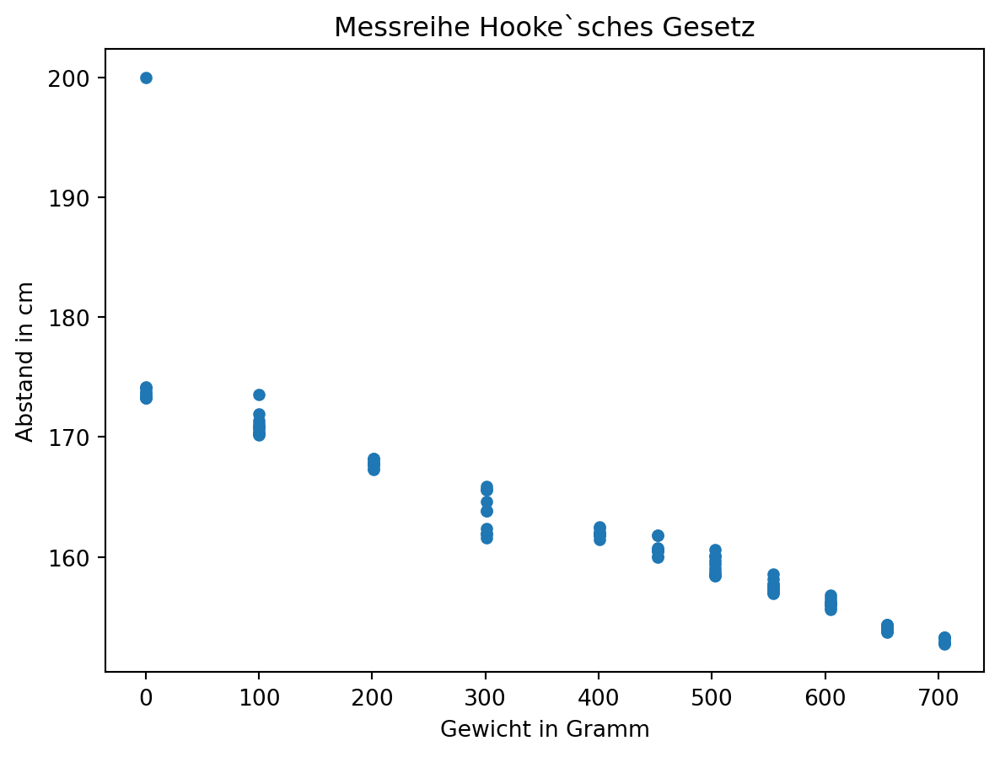
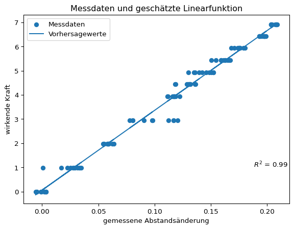

dateipfad = "01-daten/hooke_data.csv"3 Messreihe Hooke’sches Gesetz
Das Hooke’sche Gesetz, benannt nach dem englischen Wissenschaftler Robert Hooke, beschreibt die Beziehung zwischen der Kraft \(F\) und der Längenänderung \(\Delta{x}\) einer Feder durch die Gleichung \(F = k \times \Delta{x}\), wobei \(k\) die Federkonstante ist. Die Federkonstante ist eine grundlegende Eigenschaft elastischer Materialien und gibt an, wie viel Kraft erforderlich ist, um eine Feder um eine bestimmte Läange zu dehnen oder zu komprimieren. Das Hooke’sche Gesetz besagt, dass die Deformation eines elastischen Körpers proportional zur aufgebrachten Kraft ist, solange die Feder nicht über den elastischen Bereich hinaus gedehnt oder gestaucht wird.
In einem Experiment wurde das Hooke’sche Gesetz experimentell überprüft.
Beispiel 3.1: Der Versuchsaufbau

Die Messreihe liegt in Form einer CSV-Datei unter dem Pfad “01-daten/hooke_data.csv” vor. Die Datei kann direkt mit Python oder mit den Modulen NumPy und Pandas eingelesen werden.
# Datei einlesen
dateiobjekt = open(file = dateipfad, mode = "r")
hooke = dateiobjekt.read() # liefert einen string zurück
dateiobjekt.close()
# Daten betrachten
print(hooke[0:30])no;mass;distance
0;705;153.29
Die Einträge in der Datei liegen zeilenweise, d. h. durch das Zeichen \n getrennt vor. Die Werte in jeder Zeile sind mit Semikolon separiert. Mit der Methode str.split() können die Einträge in Listen eingelesen werden. Dabei stört eine leere Zeile, die von der Methode, dateiobjekt.read() am Dateiende zurückgegeben wird, die deshalb übersprungen wird.
liste_hooke_zeilenweise = hooke.split("\n")
print(liste_hooke_zeilenweise[0:3], "\n")
# leere listen anlegen
number = []
mass = []
distance = []
for zeile in liste_hooke_zeilenweise:
zwischenspeicher = zeile.split(';')
if zeile == '':
print("leere Zeile:", list(zeile))
continue
else:
number.append(zwischenspeicher[0])
mass.append(zwischenspeicher[1])
distance.append(zwischenspeicher[2])
print("\n")
print("Liste number:", number[0:10], "\n")
print("Liste mass:", mass[0:10], "\n")
print("Liste distance:", distance[0:10])['no;mass;distance', '0;705;153.29', '1;705;152.74']
leere Zeile: []
Liste number: ['no', '0', '1', '2', '3', '4', '5', '6', '7', '8']
Liste mass: ['mass', '705', '705', '705', '705', '705', '705', '705', '705', '705']
Liste distance: ['distance', '153.29', '152.74', '153.27', '152.81', '152.77', '152.82', '153.20', '152.91', '153.27']Zuletzt können die ursprünglichen Spaltenbeschriftungen entfernt und die Datentypen angepasst werden.
# ersten Eintrag entfernen
number = number[1:]
mass = mass[1:]
distance = distance[1:]
# Datentyp ändern
i = 0
for element in number:
number[i] = int(element)
i += 1
i = 0
for element in mass:
mass[i] = int(element)
i += 1
i = 0
for element in distance:
distance[i] = float(element)
i += 1
print("Liste number:", number[0:10], "\n")
print("Liste mass:", mass[0:10], "\n")
print("Liste distance:", distance[0:10])Liste number: [0, 1, 2, 3, 4, 5, 6, 7, 8, 9]
Liste mass: [705, 705, 705, 705, 705, 705, 705, 705, 705, 655]
Liste distance: [153.29, 152.74, 153.27, 152.81, 152.77, 152.82, 153.2, 152.91, 153.27, 153.87]Der Aufbau der Datei ist aus dem Einlesen mit der Pythonbasis bekannt. Da NumPy-Arrays nur einen Datentyp haben können, müssen die Spaltenbeschriftungen in ein extra Objekt eingelesen werden.
import numpy as np
hooke_nparray = np.loadtxt(fname = dateipfad, skiprows = 1, delimiter = ';')
hooke_colnames = np.loadtxt(fname = dateipfad, max_rows = 1, delimiter = ';', dtype = 'str')
print(hooke_colnames)
print(hooke_nparray[0:5])['no' 'mass' 'distance']
[[ 0. 705. 153.29]
[ 1. 705. 152.74]
[ 2. 705. 153.27]
[ 3. 705. 152.81]
[ 4. 705. 152.77]]Mit Pandas ist das Einlesen der Datei leicht.
import pandas as pd
hooke = pd.read_csv(filepath_or_buffer = dateipfad, sep = ';')
print(hooke.head(), "\n")
print(hooke.info()) no mass distance
0 0 705 153.29
1 1 705 152.74
2 2 705 153.27
3 3 705 152.81
4 4 705 152.77
<class 'pandas.core.frame.DataFrame'>
RangeIndex: 114 entries, 0 to 113
Data columns (total 3 columns):
# Column Non-Null Count Dtype
--- ------ -------------- -----
0 no 114 non-null int64
1 mass 114 non-null int64
2 distance 114 non-null float64
dtypes: float64(1), int64(2)
memory usage: 2.8 KB
NoneDeskriptive Statistik
Nach dem Einlesen sollte man sich einen Überblick über die Daten verschaffen. Dafür eignet sich besonders das Modul Pandas. Mit den Methoden pd.DataFrame.head() und pd.DataFrame.tail() kann schnell ein Ausschnitt der Daten betrachtet werden.
print(hooke.head(), "\n")
print(hooke.tail()) no mass distance
0 0 705 153.29
1 1 705 152.74
2 2 705 153.27
3 3 705 152.81
4 4 705 152.77
no mass distance
109 109 0 173.70
110 110 0 173.44
111 111 0 173.75
112 112 0 173.30
113 113 0 200.00
Die Methode pd.DataFrame.describe() erstellt die deskriptive Statistik für den Datensatz. Diese ist in diesem Fall jedoch noch nicht sonderlich nützlich. Die Spalte ‘no’ enthält lediglich eine laufende Versuchsnummer, die Spalte ‘mass’ enhält verschiedene Gewichte.
hooke.describe()| no | mass | distance | |
|---|---|---|---|
| count | 114.000000 | 114.000000 | 114.000000 |
| mean | 56.561404 | 394.921053 | 162.301754 |
| std | 33.131552 | 226.237605 | 7.483767 |
| min | 0.000000 | 0.000000 | 152.740000 |
| 25% | 28.250000 | 201.000000 | 156.622500 |
| 50% | 56.500000 | 452.000000 | 160.720000 |
| 75% | 84.750000 | 605.000000 | 167.767500 |
| max | 113.000000 | 705.000000 | 200.000000 |
Sinnvoller ist eine nach dem verwendeten Gewicht aufgeteilte beschreibende Statistik der gemessenen Ausdehnung. Dafür kann die Pandas-Methode pd.DataFrame.groupby() verwendet werden. So kann für jedes der gemessenen Gewichte der arithmethische Mittelwert und die Standardabweichung abgelesen werden.
hooke.groupby(by = 'mass')['distance'].describe()| count | mean | std | min | 25% | 50% | 75% | max | |
|---|---|---|---|---|---|---|---|---|
| mass | ||||||||
| 0 | 12.0 | 175.828333 | 7.620157 | 173.27 | 173.3150 | 173.570 | 174.1125 | 200.00 |
| 100 | 11.0 | 171.044545 | 0.985833 | 170.15 | 170.3650 | 170.800 | 171.2400 | 173.56 |
| 201 | 11.0 | 167.791818 | 0.296305 | 167.26 | 167.7200 | 167.780 | 167.9750 | 168.19 |
| 301 | 10.0 | 163.710000 | 1.660977 | 161.60 | 162.0575 | 163.825 | 165.3250 | 165.86 |
| 401 | 10.0 | 161.967000 | 0.313229 | 161.42 | 161.8450 | 161.915 | 162.0250 | 162.48 |
| 452 | 10.0 | 160.713000 | 0.627854 | 159.98 | 160.4575 | 160.555 | 160.7400 | 161.83 |
| 503 | 10.0 | 159.314000 | 0.781099 | 158.43 | 158.6400 | 159.220 | 159.9650 | 160.61 |
| 554 | 10.0 | 157.547000 | 0.523791 | 156.92 | 157.2075 | 157.435 | 157.7100 | 158.60 |
| 605 | 10.0 | 156.142000 | 0.354206 | 155.62 | 156.0700 | 156.080 | 156.2075 | 156.84 |
| 655 | 11.0 | 154.022727 | 0.224414 | 153.72 | 153.8800 | 153.920 | 154.2400 | 154.35 |
| 705 | 9.0 | 153.008889 | 0.241425 | 152.74 | 152.8100 | 152.910 | 153.2700 | 153.29 |
Bereits an dieser Stelle könnte die hohe Standardabweichung in der Messreihe mit 0 Gramm auffallen. Leichter ist es jedoch in der grafischen Betrachtung.
hooke.plot(x = 'mass', y = 'distance', kind = 'scatter', title = "Messreihe Hooke`sches Gesetz", ylabel = 'Abstand in cm', xlabel = 'Gewicht in Gramm')
Grafisch fällt der Messwert von 200 cm für das Gewicht 0 Gramm als stark von den übrigen Messwerten abweichend auf.
Die Messwerte für das Gewicht 0 Gramm sollen näher betrachtet werden. Dafür werden die Messwerte sowohl absolut, als auch standardisiert in Einheiten der Standardabweichung (z-Werten) ausgedrückt ausgegeben.
gewicht = 0
z_values = hooke[hooke['mass'] == gewicht].loc[: , 'distance'].apply(lambda x: (x - hooke[hooke['mass'] == gewicht].loc[: , 'distance'].mean()) / hooke[hooke['mass'] == gewicht].loc[: , 'distance'].std())
z_values.name = 'z-values'
print(pd.concat([hooke[hooke['mass'] == gewicht], z_values], axis = 1)) no mass distance z-values
102 102 0 173.32 -0.329171
103 103 0 174.11 -0.225498
104 104 0 173.42 -0.316048
105 105 0 174.12 -0.224186
106 106 0 173.30 -0.331795
107 107 0 174.21 -0.212375
108 108 0 173.27 -0.335732
109 109 0 173.70 -0.279303
110 110 0 173.44 -0.313423
111 111 0 173.75 -0.272742
112 112 0 173.30 -0.331795
113 113 0 200.00 3.172069Der Wert 200 cm in Zeile 113 scheint fehlerhaft zu sein. Eine Eigendehnung der Feder um zusätzliche 16 Zentimeter ist nicht plausibel. Auch der z-Wert > 3 kennzeichnet den Messwert als Ausreißer. Die Zeile wird deshalb aus dem Datensatz entfernt.
hier Aufklapper Normalverteilung
hooke.drop(index = 113, inplace = True)
hooke.groupby(by = 'mass')['distance'].describe()| count | mean | std | min | 25% | 50% | 75% | max | |
|---|---|---|---|---|---|---|---|---|
| mass | ||||||||
| 0 | 11.0 | 173.630909 | 0.367409 | 173.27 | 173.3100 | 173.440 | 173.9300 | 174.21 |
| 100 | 11.0 | 171.044545 | 0.985833 | 170.15 | 170.3650 | 170.800 | 171.2400 | 173.56 |
| 201 | 11.0 | 167.791818 | 0.296305 | 167.26 | 167.7200 | 167.780 | 167.9750 | 168.19 |
| 301 | 10.0 | 163.710000 | 1.660977 | 161.60 | 162.0575 | 163.825 | 165.3250 | 165.86 |
| 401 | 10.0 | 161.967000 | 0.313229 | 161.42 | 161.8450 | 161.915 | 162.0250 | 162.48 |
| 452 | 10.0 | 160.713000 | 0.627854 | 159.98 | 160.4575 | 160.555 | 160.7400 | 161.83 |
| 503 | 10.0 | 159.314000 | 0.781099 | 158.43 | 158.6400 | 159.220 | 159.9650 | 160.61 |
| 554 | 10.0 | 157.547000 | 0.523791 | 156.92 | 157.2075 | 157.435 | 157.7100 | 158.60 |
| 605 | 10.0 | 156.142000 | 0.354206 | 155.62 | 156.0700 | 156.080 | 156.2075 | 156.84 |
| 655 | 11.0 | 154.022727 | 0.224414 | 153.72 | 153.8800 | 153.920 | 154.2400 | 154.35 |
| 705 | 9.0 | 153.008889 | 0.241425 | 152.74 | 152.8100 | 152.910 | 153.2700 | 153.29 |
Hiernach ist die höchste Standardabweichung für die Messreihe mit 301 Gramm zu verzeichnen. Die gemessenen Werte sind jedoch unauffällig.
gewicht = 301
z_values = hooke[hooke['mass'] == gewicht].loc[: , 'distance'].apply(lambda x: (x - hooke[hooke['mass'] == gewicht].loc[: , 'distance'].mean()) / hooke[hooke['mass'] == gewicht].loc[: , 'distance'].std())
z_values.name = 'z-values'
print(pd.concat([hooke[hooke['mass'] == gewicht], z_values], axis = 1)) no mass distance z-values
70 70 301 162.38 -0.800734
71 71 301 161.93 -1.071658
72 72 301 161.95 -1.059617
73 73 301 161.60 -1.270337
74 74 301 164.59 0.529809
75 75 301 165.86 1.294419
76 76 301 163.82 0.066226
77 77 301 163.83 0.072247
78 78 301 165.57 1.119823
79 79 301 165.57 1.119823Die Grafik des bereinigten Datensatzes legt einen linearen Zusammenhang nahe. Darüber hinaus sticht der mit zunehmendem Gewicht abfallende Trend der Datenpunkte ins Auge.
hooke.plot(x = 'mass', y = 'distance', kind = 'scatter', title = 'bereinigter Datensatz', ylabel = 'Abstand in cm', xlabel = 'Gewicht in Gramm')
Entsprechend des Versuchsaufbaus nimmt mit zunehmender Dehnung der Feder der Abstand zum Abstandssensor ab. Da die Federausdehnung gemessen werden soll, bietet es sich an, die Daten entsprechend zu transformieren. Dazu wird der gemessene Abstand bei 0 Gramm Gewicht als Nullpunkt aufgefasst, von dem aus die Federdehnung gemessen wird. Das bedeutet, dass von allen Datenpunkten das arithmetische Mittel der für 0 Gramm Gewicht gemessen Ausdehnung abgezogen und das Ergebnis mit -1 multipliziert wird.
nullpunkt = hooke[hooke['mass'] == 0].loc[: , 'distance'].mean()
print(f"Nullpunkt: {nullpunkt:.2f} cm")
hooke['distance'] = hooke['distance'].sub(nullpunkt).mul(-1)
hooke.plot(x = 'mass', y = 'distance', kind = 'scatter', title = 'bereinigter und invertierter Datensatz', ylabel = 'Federausdehnung in cm', xlabel = 'Gewicht in Gramm')Nullpunkt: 173.63 cm
3.1 Federkonstante bestimmen
Die Beziehung zwischen der Kraft \(F\) und der Längenänderung \(\Delta{x}\) einer Feder mit Federkonstante \(k\) wird durch die Gleichung \(F = k \times \Delta{x}\) beschrieben. Dabei entspricht die Kraft \(F\) dem mit der Fallbeschleunigung \(g\) multiplizierten Gewicht in Kilogramm \(m\). Die Fallbeschleunigung beträgt auf der Erde \(9,81 \frac{m}{s^2}\).
Deshalb wird im Datensatz das in der Spalte ‘mass’ eingetragene Gewicht in Gramm in die wirkende Kraft umgerechnet. Ebenso wird die gemessene Abstandsänderung in der Spalte ‘distance’ von Zentimeter in Meter umgerechnet.
hooke['mass'] = hooke['mass'].div(1000).mul(9.81)
hooke.rename(columns = {'mass': 'force'}, inplace = True)
hooke['distance'] = hooke['distance'].div(100)
print(hooke.head()) no force distance
0 0 6.91605 0.203409
1 1 6.91605 0.208909
2 2 6.91605 0.203609
3 3 6.91605 0.208209
4 4 6.91605 0.208609Für die grafische Darstellung des Zusammenhangs \(F = k \times \Delta{x}\) ist es zweckmäßiger, die Abstandsänderung auf der x-Achse und die wirkende Kraft auf der y-Achse darzustellen.
hooke.plot(x = 'distance', y = 'force', kind = 'scatter', title = 'umgeformter Datensatz', ylabel = 'wirkende Kraft in $N$', xlabel = 'Abstandsänderung in Meter')Lineare Ausgleichsrechnung
Die Ausgleichsrechnung (oder auch Parameterschätzung) ist eine Methode, um für eine Messreihe die unbekannten Parameter des zugrundeliegenden physikalischen Modells zu schätzen. Das Ziel besteht darin, eine (in diesem Fall lineare) Funktion zu bestimmen, die bestmöglich an die Messdaten angepasst ist. (Wikipedia)
Eine lineare Funktion wird durch die Konstante \(\beta_0\), den Schnittpunkt mit der y-Achse, und den Steigungskoeffizienten \(\beta_1\) bestimmt.
\[ y = \beta_0 + \beta_1 \times x \]
Zur Bestimmung der Parameter einer linearen Funktion wird die Methode der linearen Regression verwendet. Die Funktionen dafür stellt das Paket numpy.polynomial bzw. für Polynomfunktionen dessen Modul numpy.polynomial.polynomial bereit.
import numpy.polynomial.polynomial as polypolyfit und polyeval
Zur Schätzung von Funktionsparametern nach der Methode der kleinsten Quadrate wird die Funktion poly.polyfit(x, y, deg) verwendet. x sind die Werte der unabhängigen Variablen, y die Werte der abhängigen Variablen und deg spezifiziert den Grad der gesuchten Polynomfunktion. deg = 1 spezifiziert eine lineare Funktion.
Beispiel 3.2: polyfit und polyeval erklärt
# Beispieldaten erzeugen
x = np.array(list(range(0, 100)))
y = x ** 2
print(np.polynomial.polynomial.polyfit(x, y, 1))[-1617. 99.]Die Funktion gibt die geschätzten Regressionsparameter als NumPy-Array zurück. Die Terme sind aufsteigend angeordnet, d. h. der Achsabschnitt steht an Indexposition 0, der Steigungskoeffizient an Indexposition 1. Die Ausgabe für ein Polynom zweiten Grades würde beispielsweise so aussehen:
print(np.polynomial.polynomial.polyfit(x, y, 2))[ 1.62413205e-12 -5.07904010e-14 1.00000000e+00]Mit den Regressionskoeffizienten können die Vorhersagewerte der linearen Funktion berechnet werden. Dafür kann die Funktion poly.polyeval(x, c) verwendet werden. Diese berechnet die Funktionswerte für in x übergebene Wert(e) mit den Funktionsparametern c.
# 'manuelle' Berechnung
regressions_koeffizienten = np.polynomial.polynomial.polyfit(x, y, 1)
vorhersagewerte = regressions_koeffizienten[0] + x * regressions_koeffizienten[1]
# Berechnung mit polyeval
lm = np.polynomial.polynomial.polyfit(x, y, 1)
vorhersagewerte_polyval = np.polynomial.polynomial.polyval(x, lm)
print("Die Ergebnisse stimmen überein:", np.equal(vorhersagewerte, vorhersagewerte_polyval).all())
print("\nAusschnitt der Vorhersagewerte:", vorhersagewerte[:10])Die Ergebnisse stimmen überein: True
Ausschnitt der Vorhersagewerte: [-1617. -1518. -1419. -1320. -1221. -1122. -1023. -924. -825. -726.]Das Bestimmtheitsmaß \(R^2\) gibt an, wie gut die Schätzfunktion an die Daten angepasst ist. Der Wertebereich reicht von 0 bis 1. Ein Wert von 1 bedeutet eine vollständige Anpassung. Für eine einfache lineare Regression mit nur einer erklärenden Variable kann das Bestimmtheitsmaß als Quadrat des Bravais-Pearson-Korrelationskoeffizienten \(r\) berechnet werden. Dieser wird mit der Funktion np.corrcoef(x, y) ermittelt (die eine Matrix der Korrelationskoeffizienten ausgibt).
print(f"r = {np.corrcoef(x, y)[0, 1]:.2f}")
print(f"R\u00b2 = {np.corrcoef(x, y)[0, 1] ** 2:.2f}")r = 0.97
R² = 0.94Die Daten und die geschätzte Gerade können grafisch dargestellt werden.
import matplotlib.pyplot as plt
plt.scatter(x, y, label = 'Beispieldaten')
plt.plot(x, vorhersagewerte, label = 'Vorhersagewerte')
plt.annotate("$R^2$ = {:.2f}".format(np.corrcoef(x, y)[0, 1] ** 2), (max(x) * 0.9, 1))
plt.title(label = 'Beispieldaten und geschätzte Linearfunktion')
plt.xlabel('x-Werte')
plt.ylabel('y-Werte')
plt.legend()
plt.show()
Beispiel 3.3: to do: numpy.polyfit & numpy.polyval
in den Aufklapper verschieben legacy - wichtigster Unterschied: Ausgabe der Koeffizienten in umgekehrter Reihenfolge!
Warnung / ein Hinweis, dass man es nicht mehr benutzen soll. https://numpy.org/doc/stable/reference/generated/numpy.polyfit.html
Hier auch noch mal deutlicher: https://numpy.org/doc/stable/reference/routines.polynomials.html “As noted above, the poly1d class and associated functions defined in numpy.lib.polynomial, such as numpy.polyfit and numpy.poly, are considered legacy and should not be used in new code. Since NumPy version 1.4, the numpy.polynomial package is preferred for working with polynomials.”
polyfit https://numpy.org/doc/stable/reference/generated/numpy.polyfit.html
polyval numpy.polyval(p, x) … evaluiere Wert(e) p mit Modellkoeffizienten x.
https://numpy.org/doc/stable/reference/generated/numpy.polyval.html
Federkonstante bestimmen
Die Parameter der an die Messwerte angepassten linearen Funktion und das Bestimmtheitsmaß lauten:
print(np.polynomial.polynomial.polyfit(hooke['distance'], hooke['force'], 1))
print(f"r = {np.corrcoef(hooke['distance'], hooke['force'])[0, 1]:.2f}")
print(f"R\u00b2 = {np.corrcoef(hooke['distance'], hooke['force'])[0, 1] ** 2:.2f}")[ 0.05753159 33.01899551]
r = 0.99
R² = 0.99Mit den Regressionskoeffizienten können die Vorhersagewerte der linearen Funktion berechnet werden.
# Berechnung mit polyeval
lm = np.polynomial.polynomial.polyfit(hooke['distance'], hooke['force'], 1)
vorhersagewerte_hooke = np.polynomial.polynomial.polyval(hooke['distance'], lm)Die Messreihe und die darauf angepasste lineare Funktion können grafisch dargestellt werden.
# Platzhalter
x = hooke['distance']
y = hooke['force']
# Plot erstellen
plt.scatter(x, y, label = 'Messdaten')
plt.plot(x, vorhersagewerte_hooke, label = 'Vorhersagewerte')
plt.annotate("$R^2$ = {:.2f}".format(np.corrcoef(x, y)[0, 1] ** 2), (max(x) * 0.9, 1))
plt.title(label = 'Messdaten und geschätzte Linearfunktion')
plt.xlabel('gemessene Abstandsänderung')
plt.ylabel('wirkende Kraft')
plt.legend()
plt.show()
Messabweichung quantifizieren
Konfidenzintervall des Regressionskoeffizienten berechnen:
https://mountain-hydrology-research-group.github.io/data-analysis/modules/module4/lab4-3.html
(benötigt aber stats für die t-Verteilung)
to do: plt.errorbar (capsize = 3 macht kleine Linien an den Enden der Kerze)
wann / wozu braucht man das: Durch Umstellen nach der Federkonstante \(k\) kann diese wie folgt ermittelt werden:
\[ k = \frac{m \times g}{\Delta{x}} \]